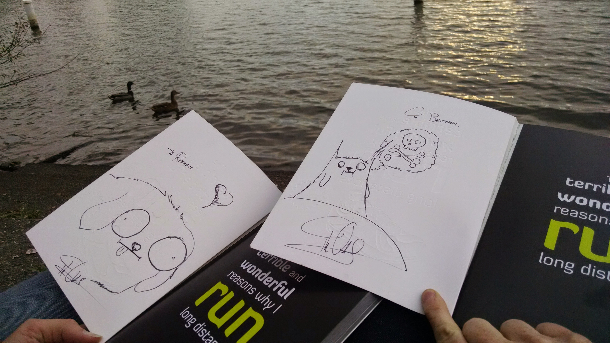
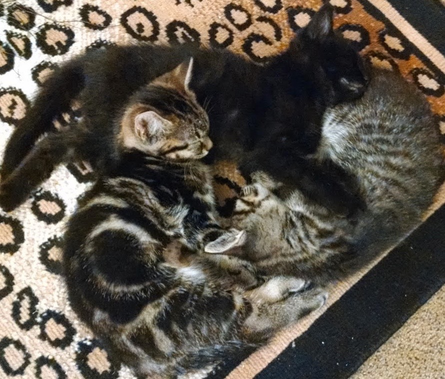

My name is Brittany L Walentin. I am currenty attending Ada Developer's Academy.
I hope to use this website to showcase my growing programming abilities to potential collaborators and employers. I am fortunate enough to be in the 3rd Cohort of Ada Developers Academy, (Ada Website) an intensive program for women transitioning into software development. Ada Academy is an amazing program based in Seattle, where after a year the amazing women come out of it full stack developers.
During the 7 months of instruction I will learn Ruby, Rails, HTML + CSS, Janascript and GIT + Source Control. After that, I will begin and internship at one of the sponsoring companies and gain real-world knowledge.
I grew up in the sunny inland northwest, spending my time with Legos, traipsing around the fields near our neighborhood, and gobbling up any books I could put my hands on.
From an early age I was an inquisitive child, always wondering “why” and “how”. I even had the opportunity to attend Space Camp, where I fostered lifelong ties with some very brilliant kids. My inquisitiveness lead me to an education in science and a career in Chemistry and Biotechnology.
I have worked in many different environments: retail, service industry, oceanography, academia, and the pharmaceutical industry. I have always loved thinking critically and solving puzzles, which dovetails nicely with being a software developer.
I enjoy listening to good tunes, watching cartoons, cats, playing games (tabletop and consoles), reading physical books (sorry kindle),and other leisure activities.
You may find me hitting the tennis courts if the weather is nice, or if not playing indoor volleyball. Alternatively, I could be in costume attending a convention (con) if it’s that season.
I love to learn, enjoy traveling, and strive to make a positive impact daily.

I was able to get a signed copy of The Oatmeal's book before running the Blerch in 2014.

Kitties I raised in 2014. Kalessi, Moriarty and Bagheera.